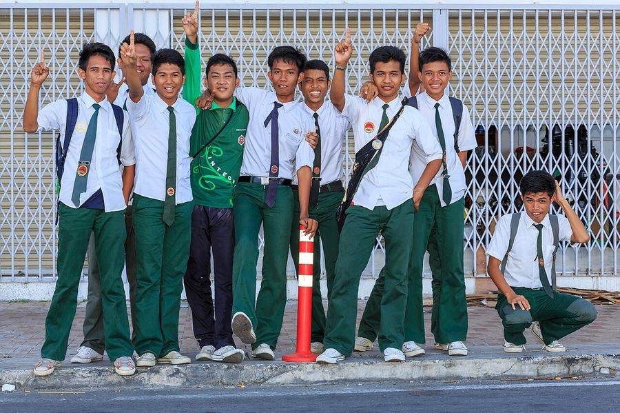
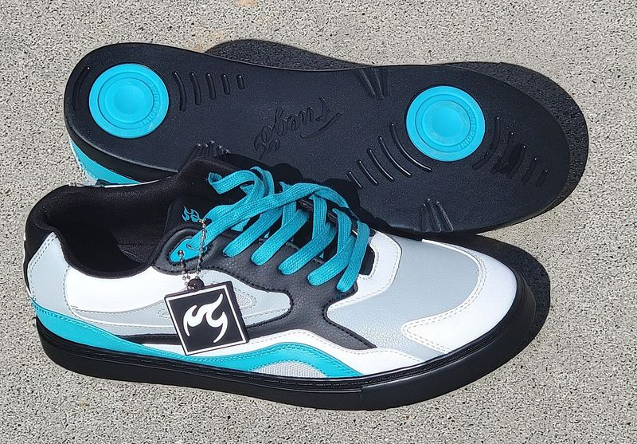
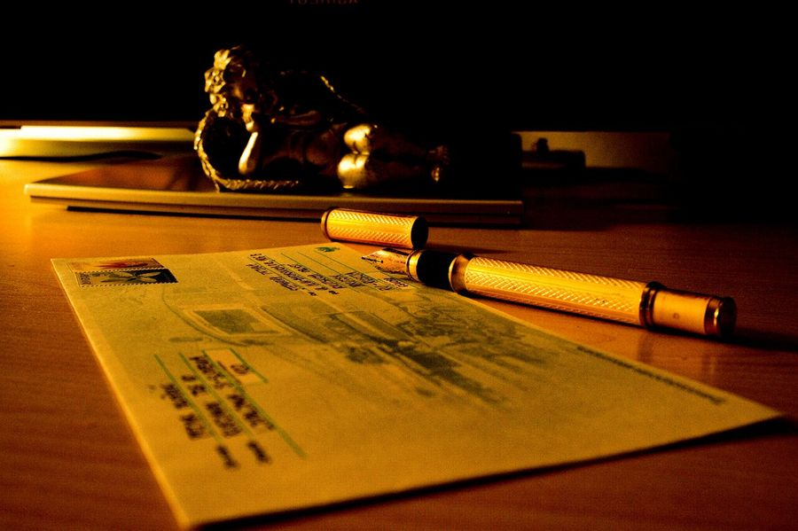

Alice, ta lettre sur la tenue scolaire est claire et bien organisée : tu donnes des arguments pour et contre, et tu conclus avec ton avis. Voici les cinq points à travailler pour qu'elle soit parfaite.
Alice, la tua lettera sulla divisa scolastica è chiara e ben organizzata: dai argomenti a favore e contro e concludi con la tua opinione. Ecco i cinque punti da lavorare perché sia perfetta.
01
Ils ont déjà adopté
Le passé composé et la place de « déjà »
Dans ta lettre
Beaucoup d'autres pays déjà utilisé cette méthode.
En français, on écrit
Beaucoup d'autres pays ont déjà adopté cette méthode.
Au passé composé, l'auxiliaire est obligatoire : avoir ou être + participe passé.
Al passato prossimo l'ausiliare è obbligatorio: avere o essere + participio passato.
sujetontdéjàadopté
Les petits adverbes déjà, jamais, toujours, souvent, bien, encore se placent entre l'auxiliaire et le participe.
Gli avverbi brevi si mettono tra l'ausiliare e il participio, esattamente come in italiano: hanno già adottato.
C'est le même ordre qu'en italien : hanno già adottato → ont déjà adopté.
La France a déjà testé l'uniforme dans quelques collèges.
La Francia ha già sperimentato la divisa in alcune scuole medie.
Nous n'avons jamais porté d'uniforme.
Non abbiamo mai portato la divisa.
Le lycée a souvent changé son règlement.
Il liceo ha cambiato spesso il suo regolamento.
Au présent : beaucoup de pays utilisent déjà l'uniforme.
Al presente: molti paesi usano già la divisa.
02
Très, beaucoup, beaucoup de
Trois façons de dire « molto »
Dans ta lettre
C'est une bonne idée, mais aussi beaucoup différente pour nous élèves.
En français, on écrit
C'est une bonne idée, mais très différente pour nous, les élèves.
très + adjectif / adverbe
C'est très différent.
È molto diverso.
Je le vois très souvent.
Lo vedo molto spesso.
verbe + beaucoup
Cette idée me plaît beaucoup.
Questa idea mi piace molto.
Les élèves en parlent beaucoup.
Gli studenti ne parlano molto.
beaucoup de + nom
beaucoup de familles
molte famiglie
beaucoup d'élèves
molti studenti
Avec un comparatif, on garde beaucoup : c'est beaucoup plus simple.
Con un comparativo: molto più semplice → beaucoup plus simple.
« Pour nous, les élèves » : en français, on ajoute la virgule et l'article.
« Per noi studenti » → pour nous, les élèves.
03
Tous les élèves ne sont pas d'accord
Dire « non tutti »
Dans ta lettre
En français, on écrit
Toutes les familles ne peuvent pas acheter tous les vêtements.

En début de phrase, on ne commence pas par « pas tous ». On dit : tous / toutes + nom + ne + verbe + pas.
All'inizio della frase non si dice « pas tous » davanti al soggetto: si mette la negazione intorno al verbo.
Toutesles famillesnepeuventpas
Tous les élèves ne sont pas d'accord.
Non tutti gli studenti sono d'accordo.
Toutes les familles n'ont pas les moyens d'acheter trois uniformes.
Non tutte le famiglie hanno i mezzi per comprare tre divise.
Tout le monde n'aime pas porter une cravate.
Non a tutti piace portare la cravatta.
Vous êtes d'accord ? — Pas tous.
Siete d'accordo? — Non tutti.
« Pas tous » existe seulement seul, dans une réponse courte. Pour dire « nessuno » : aucune famille ne peut.
« Pas tous » da solo, nelle risposte brevi. « Nessuna famiglia può » = aucune famille ne peut.
04
D'autres, les autres, des autres
Altri, gli altri, degli altri
Dans ta lettre
Il y a autres choses qui permettent d'être différent.
En français, on écrit
Il y a d'autres choses qui permettent d'être différent.

d'autres + nom
altri / altre
Il y a d'autres solutions.
Ci sono altre soluzioni.
beaucoup d'autres pays
molti altri paesi
les autres
gli altri / le altre
Les autres élèves sont d'accord.
Gli altri studenti sono d'accordo.
Il faut respecter les autres.
Bisogna rispettare gli altri.
des autres
degli altri / dagli altri
l'avis des autres
l'opinione degli altri
se différencier des autres
distinguersi dagli altri
Des devient d' devant « autres » + nom : des solutions → d'autres solutions. Jamais « autres » tout seul devant un nom.
Davanti a « autres » + nome, l'articolo des diventa d'.
05
La décision la plus juste
Le superlatif, « meilleur » et l'accord de « tout »
Dans ta lettre
Je suis sûre qu'on prendra la décision plus juste pour tous l'école.
En français, on écrit
Je suis sûre qu'on prendra la décision la plus juste pour toute l'école.
Quand l'adjectif est après le nom, on répète l'article : le / la / les + plus + adjectif.
In italiano non si ripete l'articolo (la decisione più giusta); in francese sì.
ladécisionlaplusjuste
C'est la solution la plus simple.
È la soluzione più semplice.
Le jean est le vêtement le plus pratique.
I jeans sono il capo più pratico.
L'uniforme peut créer une meilleure ambiance.
La divisa può creare un clima migliore.
Pour moi, c'est la meilleure idée.
Per me è l'idea migliore.
Bon → meilleur, jamais « plus bon ». Et il s'accorde : une ambiance → une meilleure ambiance.
Buono → migliore. « Ambiance » è femminile: une meilleure ambiance.
tout le lycéetoute l'écoletous les élèvestoutes les familles
+
Le mot juste
Des mots qui changent en passant de l'italien au français
le harcèlement scolaire
il bullismo
le sentiment d'appartenance
il senso di appartenenza
surtout si · même si
soprattutto se · anche se
certaines écoles pensent
alcune scuole (certe scuole)
des pays comme les États-Unis ou la Chine
paesi come gli Stati Uniti o la Cina
au lycée en France : Monsieur le Proviseur
il preside
Exercices
1
Exercice · très ou beaucoup
Choisis le bon mot.
Scegli la parola giusta.
L'uniforme coûte ___ cher.
L'uniforme coûte très cher.
La divisa costa molto.
Mes parents travaillent ___.
Mes parents travaillent beaucoup.
I miei genitori lavorano molto.
Il y a ___ élèves dans la cour.
Il y a beaucoup d'élèves dans la cour.
Ci sono molti studenti in cortile.
Le règlement du lycée est ___ strict.
Le règlement du lycée est très strict.
Il regolamento del liceo è molto severo.
Cette solution est ___ plus simple.
Cette solution est beaucoup plus simple.
Questa soluzione è molto più semplice.
Nous avons ___ devoirs ce week-end.
Nous avons beaucoup de devoirs ce week-end.
Abbiamo molti compiti questo fine settimana.
2
Exercice · phrases en ordre
Touche les étiquettes dans le bon ordre pour construire la phrase au passé composé.
Tocca le etichette nell'ordine giusto per costruire la frase al passato prossimo.
Beaucoup de pays ont déjà adopté l'uniforme.
Molti paesi hanno già adottato la divisa.
Nous n'avons jamais porté de cravate.
Non abbiamo mai portato la cravatta.
Le directeur a bien compris notre problème.
Il preside ha capito bene il nostro problema.
Les élèves ont souvent parlé de ce projet.
Gli studenti hanno parlato spesso di questo progetto.
3
Exercice · d'autres, les autres, des autres
Choisis la bonne forme.
Scegli la forma giusta.
Il existe ___ solutions contre le harcèlement.
Il existe d'autres solutions contre le harcèlement.
Esistono altre soluzioni contro il bullismo.
Je ne veux pas copier le style ___.
Je ne veux pas copier le style des autres.
Non voglio copiare lo stile degli altri.
Moi, je suis pour. ___ élèves de ma classe sont contre.
Moi, je suis pour. Les autres élèves de ma classe sont contre.
Io sono a favore. Gli altri studenti della mia classe sono contrari.
Beaucoup ___ pays ont un uniforme.
Beaucoup d'autres pays ont un uniforme.
Molti altri paesi hanno una divisa.
Il faut écouter l'avis ___.
Il faut écouter l'avis des autres.
Bisogna ascoltare l'opinione degli altri.
Nous avons ___ idées pour la fête du lycée.
Nous avons d'autres idées pour la fête du lycée.
Abbiamo altre idee per la festa del liceo.
4
Exercice · dire « non tutti »
Complète avec le verbe au présent pour dire « non tutti ».
Completa con il verbo al presente per dire « non tutti ».
Toutes les familles ___ payer l'uniforme.(pouvoir)
Toutes les familles ne peuvent pas payer l'uniforme.
Non tutte le famiglie possono pagare la divisa.
Tous les élèves ___ d'accord avec le projet.(être)
Tous les élèves ne sont pas d'accord avec le projet.
Non tutti gli studenti sono d'accordo con il progetto.
Tout le monde ___ porter une cravate.(aimer)
Tout le monde n'aime pas porter une cravate.
Non a tutti piace portare la cravatta.
Tous les professeurs ___ l'uniforme.(vouloir)
Tous les professeurs ne veulent pas l'uniforme.
Non tutti i professori vogliono la divisa.
— Les élèves aiment l'uniforme ? — ___.(non tutti)
— Les élèves aiment l'uniforme ? — Pas tous.
— Agli studenti piace la divisa? — Non a tutti.
5
Exercice · superlatif et accords
Écris la forme qui manque.
Scrivi la forma che manca.
C'est la décision ___ pour toute l'école.(+ juste)
C'est la décision la plus juste pour toute l'école.
È la decisione più giusta per tutta la scuola.
Le jean est le vêtement ___ du monde.(+ pratique)
Le jean est le vêtement le plus pratique du monde.
I jeans sono il capo più pratico del mondo.
L'uniforme peut créer une ___ ambiance.(bon, comparatif)
L'uniforme peut créer une meilleure ambiance.
La divisa può creare un clima migliore.
Pour moi, c'est ___ idée de toutes.(bon, superlatif)
Pour moi, c'est la meilleure idée de toutes.
Per me è l'idea migliore di tutte.
Le proviseur écrit à ___ l'école.(tout)
Le proviseur écrit à toute l'école.
Il preside scrive a tutta la scuola.
___ les familles reçoivent la lettre.(tout)
Toutes les familles reçoivent la lettre.
Tutte le famiglie ricevono la lettera.
6
Exercice · traduction
Traduis en français. Puis compare avec la correction et écoute-la.
Traduci in francese. Poi confronta con la correzione e ascoltala.
Non tutti gli studenti vogliono portare la divisa.
Tous les élèves ne veulent pas porter l'uniforme.
Ta phrase est juste ?
Molti altri paesi hanno già scelto questa soluzione.
Beaucoup d'autres pays ont déjà choisi cette solution.
Ta phrase est juste ?
È un cambiamento molto importante per noi studenti, soprattutto se una famiglia è numerosa.
C'est un changement très important pour nous, les élèves, surtout si une famille est nombreuse.
Ta phrase est juste ?
Il bullismo è un problema serio: dobbiamo rispettare gli altri.
Le harcèlement scolaire est un problème sérieux : nous devons respecter les autres.
Ta phrase est juste ?
Spero che il preside prenda la decisione più giusta per tutta la scuola.
J'espère que le proviseur prendra la décision la plus juste pour toute l'école.
Ta phrase est juste ?
Après espérer que, on utilise l'indicatif : j'espère qu'il prendra (et non « prenne »).
Dopo « espérer que » si usa l'indicativo, non il congiuntivo.
7
Exercice · production écrite
Le portable au lycée : pour ou contre ?
Il cellulare a scuola: pro o contro?

Sujet
Ton lycée veut interdire complètement le téléphone portable, même pendant la récréation. Tu écris une lettre au proviseur pour donner ton avis nuancé et proposer une solution. Environ 180 mots.
Il tuo liceo vuole vietare completamente il cellulare, anche durante l'intervallo. Scrivi una lettera al preside per dare la tua opinione sfumata e proporre una soluzione. Circa 180 parole.
Mots utiles
l'interdictionil divieto
la concentrationla concentrazione
la récréationl'intervallo
les réseaux sociauxi social
le harcèlement en ligneil cyberbullismo
joindre ses parentscontattare i genitori
un compromisun compromesso
la dépendance aux écransla dipendenza dagli schermi
un casierun armadietto
Pour trouver tes idées
- Pendant les cours, qu'est-ce que le portable change pour la concentration ? Et pendant la récréation, pour les amitiés ?
- Le portable peut-il aussi être utile ? Pense aux parents, aux transports, aux recherches pour un exposé.
- Le harcèlement en ligne commence-t-il au lycée ou à la maison ? Une interdiction suffit-elle ?
- Quel compromis serait juste pour tout le monde : un casier, des moments précis, des règles écrites avec les élèves ?
Organise ton texte
- Introduction (3 lignes) : la date, la formule, qui tu es, pourquoi tu écris.Monsieur le Proviseur, je m'appelle… et je vous écris au sujet de…
- Ce qui est juste dans le projet (5 lignes) : deux arguments pour.D'abord, … De plus, …
- Les limites (5 lignes) : deux arguments contre, avec un exemple concret.En revanche, … Pourtant, tous les élèves ne…
- Ta proposition (4 lignes) : un compromis réaliste.C'est pourquoi je propose que… Ce serait la solution la plus…
- Conclusion (3 lignes) : ton avis en une phrase et la formule finale.En conclusion, … Je vous prie d'agréer, Monsieur le Proviseur, l'expression de mes salutations respectueuses.
Défi
Utilise les cinq points de la leçon. Ils s'allument quand tu les écris :
Usa i cinque punti della lezione. Si illuminano quando li scrivi:
ont déjà / n'ont jamais…très · beaucoup detous… ne… pasd'autres · des autresle / la plus…
0 mot
À revoir
Ici apparaîtront les points à revoir, avec un lien vers la règle.
| Ex. | La bonne réponse | Ta réponse | La règle |
|---|